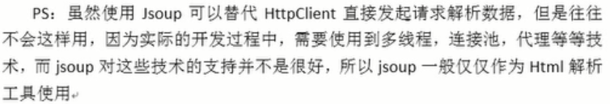

jsoup是一款java的HTML解析器，可以直接解析某个URL地址，HTML文本内容。它提供了一套非常省力的API，可通过DOM，CSS以及类似于jQuery的操作方法来取出和操作数据。
jsoup的主要功能如下：
1、从一个URL，文件或者字符串中解析HTML。
2、使用DOM或者CSS选择器来查找，取出数据。
3、可操作HTML元素，属性，文本。
加入JSoup依赖
<dependency>
<groupId>org.jsoup</groupId>
<artifactId>jsoup</artifactId>
<version>1.10.3</version>
</dependency>
加入处理文字和处理文件的工具类依赖
<dependency>
<groupId>org.apache.commons</groupId>
<artifactId>commons-lang3</artifactId>
<version>3.3.2</version>
</dependency>
<dependency>
<groupId>commons-io</groupId>
<artifactId>commons-io</artifactId>
<version>2.6</version>
</dependency>
jsoup输入url
{
//解析url地址，第一个参数是需要解析的url，第二个参数是连接的超时时间
Document dom= Jsoup.parse(new URL("https://www.baidu.com"),10000);
//获取页面信息，输出为html文件
FileUtils.writeStringToFile(new File("C:\Users\爱德华\Desktop"),dom.html(),"UTF-8");
//使用dom对象解析页面,获取title标签的内容
String string=dom.getElementsByTag("title").first().text();
}
jsoup输入字符串
//使用工具类，读取文件获取字符串
String html= FileUtils.readFileToString(new File(""),"UTF-8");
//使用jsoup解析字符串
Document dom=Jsoup.parse(html);
//获取title标签的内容
String title=dom.getElementsByTag("title").first().text();
jsoup解析文件
Document dom=Jsoup.parse(new File("C:\Users\爱德华\Desktop"),"UTF-8")
String title=dom.getElementsByTag("title").first().text();

jsoup解析
一、dom方式遍历
String str="";
//元素获取
//1、根据id查询元素getElementById
str=dom.getElementsById("id值").text();
//2、根据标签获取元素getElementsByTag
str=dom.getElementsByTag("title").first().text();
//3、根据class获取元素getElementsByClass
str=dom.getElementsByClass("").text();
//4、根据属性获取元素getElementsByAttribute
str=dom.getElementsByAttribute("").get(0).text();
str=dom.getElementsByAttributeValue("属性名","属性值").first().text();
元数据获取：
String st="";
//1、从元素中获取id
st=dom.getElementsById("id值").id();
//2、从元素中获取className和classNames
st=dom.getElementsById("id值").className();
for(String string:dom.getElementsById("id值").classNames()){
System.out.println(string);
}
//3、从元素中获取属性的值attr
str=dom.getElementsById("id值").attr("属性名");
//4、从元素中获取所有属性attributes
Attributes attributes=dom.getElementsById("id值").attributes();
//5、从元素中获取文本内容text
str=dom.getElementsById("id值").text();
//6、从元素中获取html
str=dom.getElementsById("id值").html();
二、选择器语法
1、tagname：通过标签查找元素
str=dom.select("title").first().text();
2、 ns|tag：通过标签在命名空间查找元素，比如：可以用fb|name语法来查找<fb:name>元素
str=dom.select("fb|name").first().text();
3、#id:通过id查找元素，比如：#logo
str=dom.select("#logo").first().text();
4、.class:通过class名称查找元素
str=dom.select(".orangelink").first().text();
5、[attribute]:利用属性查找元素，比如[href]
str=dom.select("[href]").first().text();
6、[attr=value]:利用属性值来查找元素，比如[width=500]
str=dom.select("[width=500]").first().text();
选择器组合使用
1、el#id:元素+ID 比如 div#logo
srt=dom.select("div#logo").first().text();
2、el.class:元素+class，比如：div.masthead
srt=dom.select("div.masthead").first().text();
3、el[attr]:元素+属性名,比如：a[href]
srt=dom.select("a[href]").first().text();
4、任意组合，比如：a[href].highlight
srt=dom.select("a[href].highlight").first().text();
5、ancestor child:查找某个元素下子元素，比如：.body p 查找“body”下所有 p
srt=dom.select("div#auto-header .mini-left").first().text();
6、parent>child:查找某个父元素下的直接子元素(相差一级)，比如：div.context>P查找p
srt=dom.select("div.masthead").first().text();
7、parent>*:查找某个父元素下的所有直接子元素
srt=dom.select("div.masthead>*").first().text();